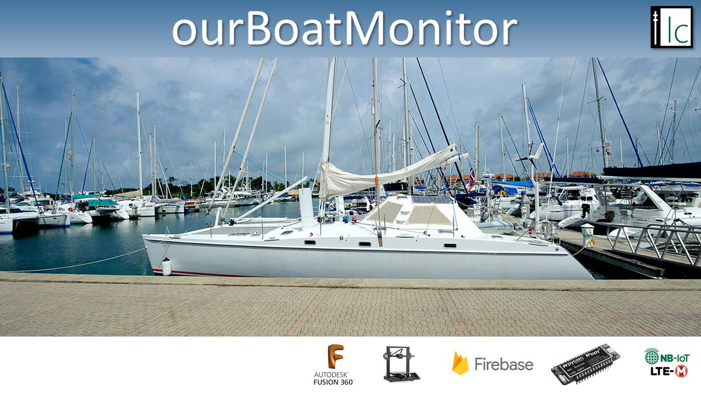

<!-- Image carousel showing applications main functions -->


<!-- Cards with more information about application functions (align with carousel info) -->

<div class="card-container">
  <mat-card class="home-card">
    <mat-card-header class="card-header">
      <div mat-card-avatar class="card-1-image"></div>
      <mat-card-title>ourBoatMonitor</mat-card-title>
      <mat-card-subtitle>Monitor the status of your boat </mat-card-subtitle>
    </mat-card-header>

    <mat-card-content>
      <p>
        Manage the status information being sent from your boat and the
        ourBoatMonitor hardware. This includes; monitoring of the boat
        temperature and humidity, the location based on GPS, the boat battery
        voltage and current level of bilge water. Notifications can be sent when
        any of these sensors exceed a predefined threshold. Also historic views
        are available of this sensor data over time.
      </p>
    </mat-card-content>
  </mat-card>
</div>
